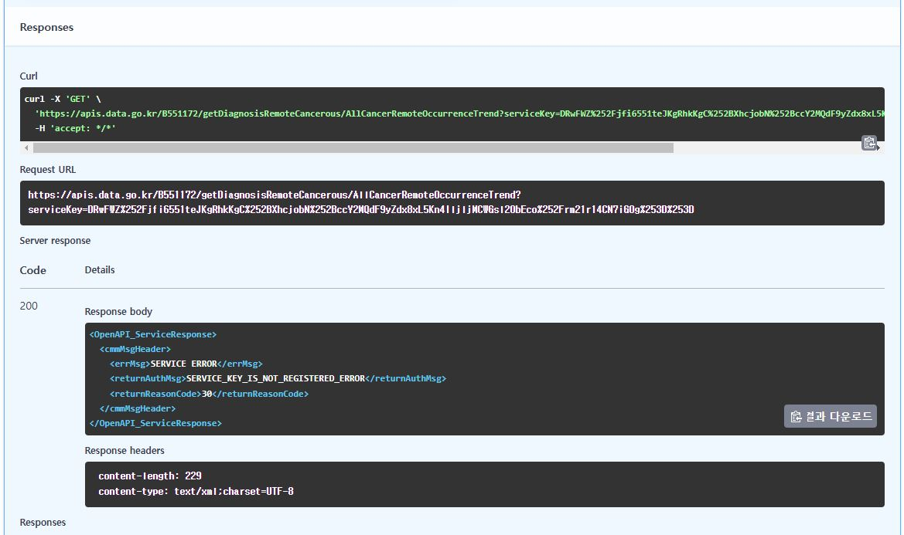
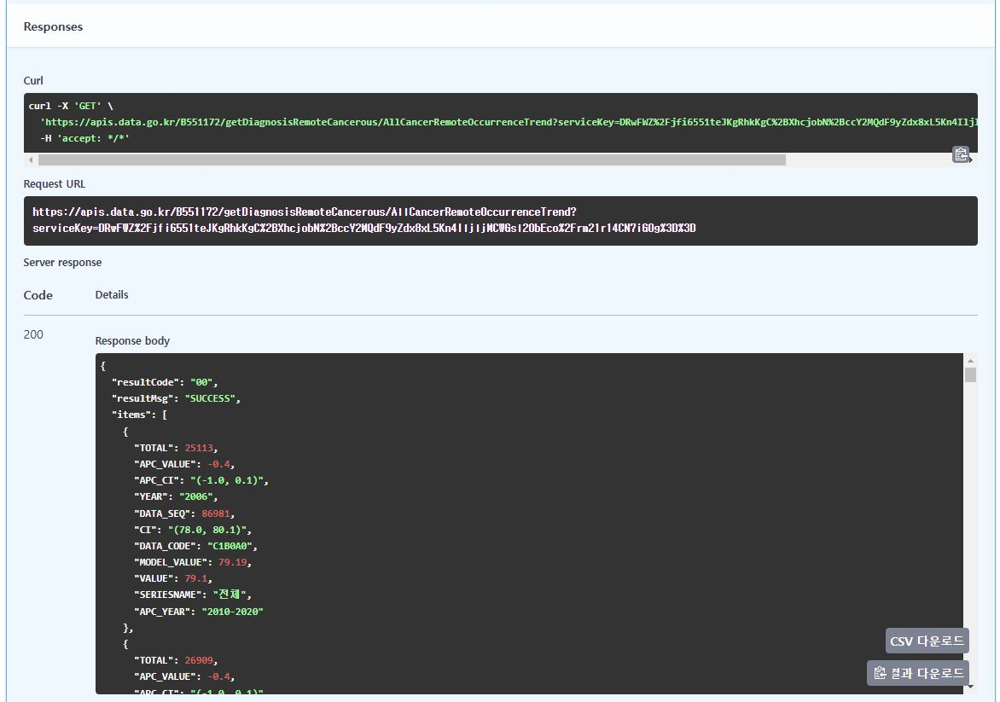

공공데이터포털(https://www.data.go.kr/index.do)은 공공기관이 생성 또는 취득하여 관리하고 있는 공공데이터를 한 곳에서 제공하는 통합 창구입니다. 포털에서는 국민이 쉽고편리하게 공공데이터를 이용할 수 있도록 파일데이터, 오픈API, 시각화 등 다양한 방식으로 제공하고 있으며, 누구라도 쉽고 편리한 검색을통해 원하는 공공데이터를 빠르고 정확하게 찾을 수 있습니다.
회원가입
가입 단계 중에 스마트폰 등의 본인 인증이 필요합니다.
알파이썬연구회는 사업자등록번호가 없으므로 기업회원으로도 가입하지 않았습니다.
따라서 공공데이터를 활용하기 위해서는 연구회분들이 직접 회원가입을 하셔야 합니다.
원하는 API 찾기
“국립암센터 원격전이 암발생 지표”를 검색하시면 ?@fig-API_list 와 같이 목록을 쉽게 얻을 수 있습니다.
저자의 경우 이전에 2건을 신청했었기 때문에 활용 3건으로 조회 됩니다. 원하는 목록을 선택하여 진행합니다.
인증키 확인하기
개발계정 상세보기를 통해 아래의 정보들을 확인할 수 있습니다.
기본정보
서비스유형은 대부분 REST(Representational State Transfer)로 되어 있으며,
지금 단계에서는 REST란 웹 자원(데이터, 서비스 등)을 클라이언트(=application)와 서버(=program) 간에 효율적으로 전송하고 관리하기 위해 HTTP 프로토콜을 사용하는 아키텍처 스타일로 간단하게 이해하시면 됩니다.
서비스정보
데이터 포멧: XML+JSON,
우리가 얻고자 하는 REST의 웹자원에 해당하면 다양한 유형의 자료를 유연하게 전달하기 위한 자료형식을 선택하고 있다고 이해하시면 됩니다.
End Point:
API에서는 이 주소를 통해 데이터를 요청하고 응답을 받을 수 있습니다.
일반 인증키:
사용자 식별과 보안목적이며,
Encoding과 Decoding 인증키 2개가 있는데
다소 황당할 수 있지만 어떤 것이 유효할지 사용자가 테스트하여 선택해야 합니다.
활용신청 상세기능정보
원하는 상세기능의 미리보기를 선택하면
요청변수(Request Parameters)를 볼 수 있습니다. HTTP 프로토콜에서 사용자의 요청을 퀴리로 전달하는 방식입니다.
서비스 인증키: 이 항목에는 일반 인증키를 입력하면 되고 아직은 encoding 키와 decoding 키 둘 다 작동함을 알 수 있습니다.
페이지 번호: XML 등에서 전달하고자 하는 자료의 양이 많을 떄 페이지를 분할하여 전달하기 때문이며, 총페이지수, 현재페이지번호 등의 정보를 이용해서 조회할 수 있습니다.
한 페이지 결과 수: 한 번의 요청에서 받을 수 있는 데이터의 개수를 정의하는 설정입니다.
기타의 변수들도 지정이 되어있으며 이는 API 마다 다릅니다. 여기에서는 요청데이터 타입이 xml로 지정하여 진행해 봅니다.
미리보기를 실행하면 별도의 웹브라우저창이 열리면서 요청변수에 의한 결과가 XML 형태로 보여집니다.
가장 상위에 Root Tag가 보여집니다. 여기에서는 <api Response> 형태로 작성되었으며 전체 데이터를 감싸는 역할을 합니다.
다음 수준에서는 메타데이터 태그 (Metadata Tag)가 보여집니다. 요청에 대한 상태 정보, 요청 결과의 요약 정보 등을 포함되며 여기에서는 HTTP 응답 상태로써 <resultCode>와 <resultMsg>, <totalCount>, <pageNo>, <numOfRows>가 보입니다.
보다하위에는 <item>이라하여 실제 데이터부분이 있으며 요청변수에 근거하여 반환되는 값들이 항목별로 포함되어 있습니다.
base URL 확인하기
개발계정 상세보기에서 기본정보의 데이터명에 있는 상세설명 버튼을 클릭하여 이동할 수 있습니다.
활용명세 내에서는 중단에 base URL을 제공하고 있습니다.
개발계정에서의 End Point와 주소가 같습니다.
굳이 해석해보자면 개발계정입장에서의 End Point가 API 목록을 연결할 때에는 base URL로 작용한다고 생각해도 무방할 듯 합니다.
API 목록별 url 확인하기 (=end point)
API 목록
원하는 데이터를 선택하기 위한 url이 추가로 제공됩니다.
해당 목록에는 복사버튼까지 제공됩니다.
작동하는 인증키 확인하기
- 클릭하여 선택하면 OpenAPI 실행준비를 할 수 있습니다 (테스트를 해 볼 수 있다는 의미입니다).
- OpenAPI 실행준비 버튼을 클릭해야 요청변수를 지정해 볼 수 있습니다.
- serviceKey \* required는 필수적으로 지정해야 한다고 안내가 있으며 앞서의 Encoding과 Decoding 중 하나씩 테스트를 해 보아야 합니다.
- 여기에서는 Encoding을 선택하여 진행해서 openAPI 버튼을 클릭해서 진행해보면 아래의 그림과 같이 `SERVICE_KEY_IS_NOT_REGISTERED_ERROR` 오류메세지가 발생하고 적절한 결과를 얻을 수 없습니다. 즉 이 API 목록의 경우에서 Encoding 키는 정상작동을 하지 않는 것을 확인한 것입니다.

이제 Decoding 키를 선택하여 진행해 보면 아래와 같이 SUCCESS 메세지가 포함된 결과를 얻을 수 있습니다.

serviceKey에 대한 테스트는 완료되었고, 항후의 R 또는 Python에서 활용하고자 할 때, 작동하는 인증키를 사용하시면 됩니다.